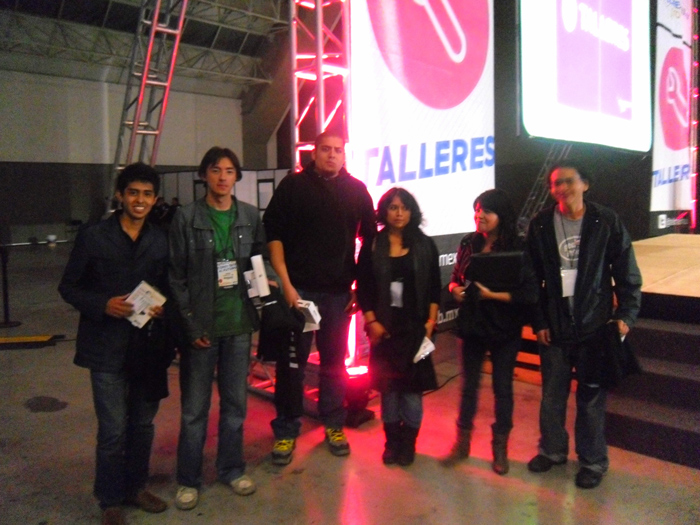
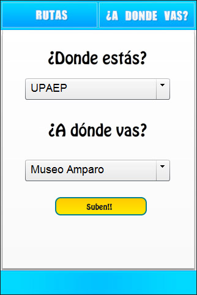
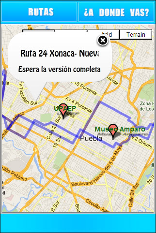
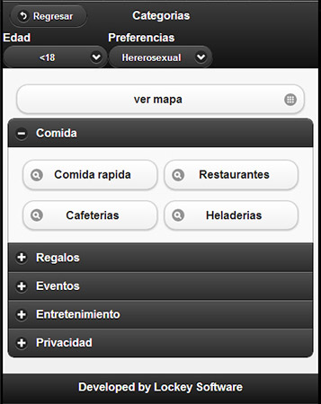
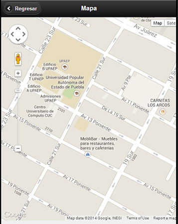
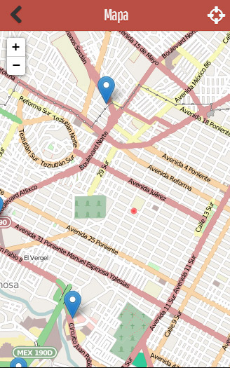
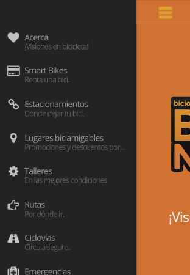
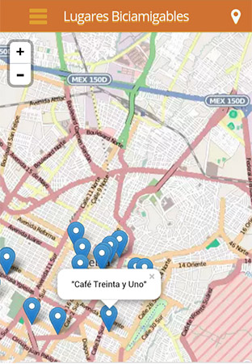
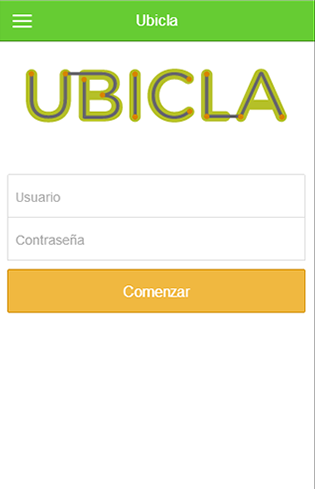
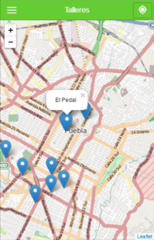

Información valiosa para ciclistas.
Meetup AngularJS DF - 30/Ago/2014 - Centraal, México D.F.
Ubicla
Ubicla es el front-end de una aplicación web exportable a dispositivos móviles que provee información valiosa para ciclistas.
¿Cómo nace Ubicla?
Mapas, mapas y mapas...
Gira Telmex Hub Puebla - App Challenge
Suben! Hay Lugares
 Guía Romantica
jQuery Mobile y Phonegap


Titanium y mapas offline
LungoJS

Bici Por Puebla
 Ubicla
 Desarrollo
Ubicla está desarrollada en Ionic Framework que a su vez está basado en AngularJS y Apache Cordova. Utilizamos OpenStreetMap como servidor de mapas y Leaflet para manejarlos mediante angular-leaflet-directive. Los datos de los marcadores los obtenemos mediante la API de Foursquare.
angular-leaflet-directive